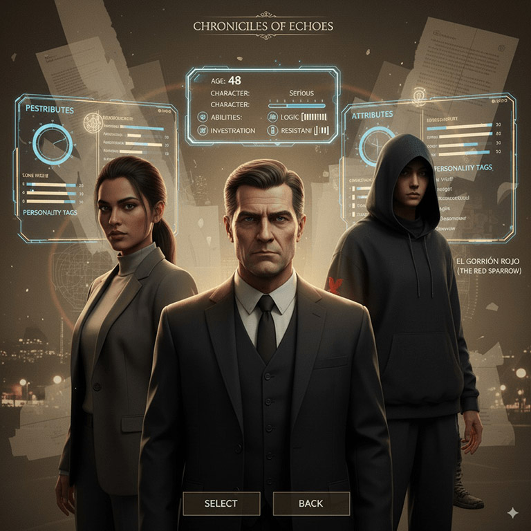
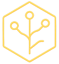
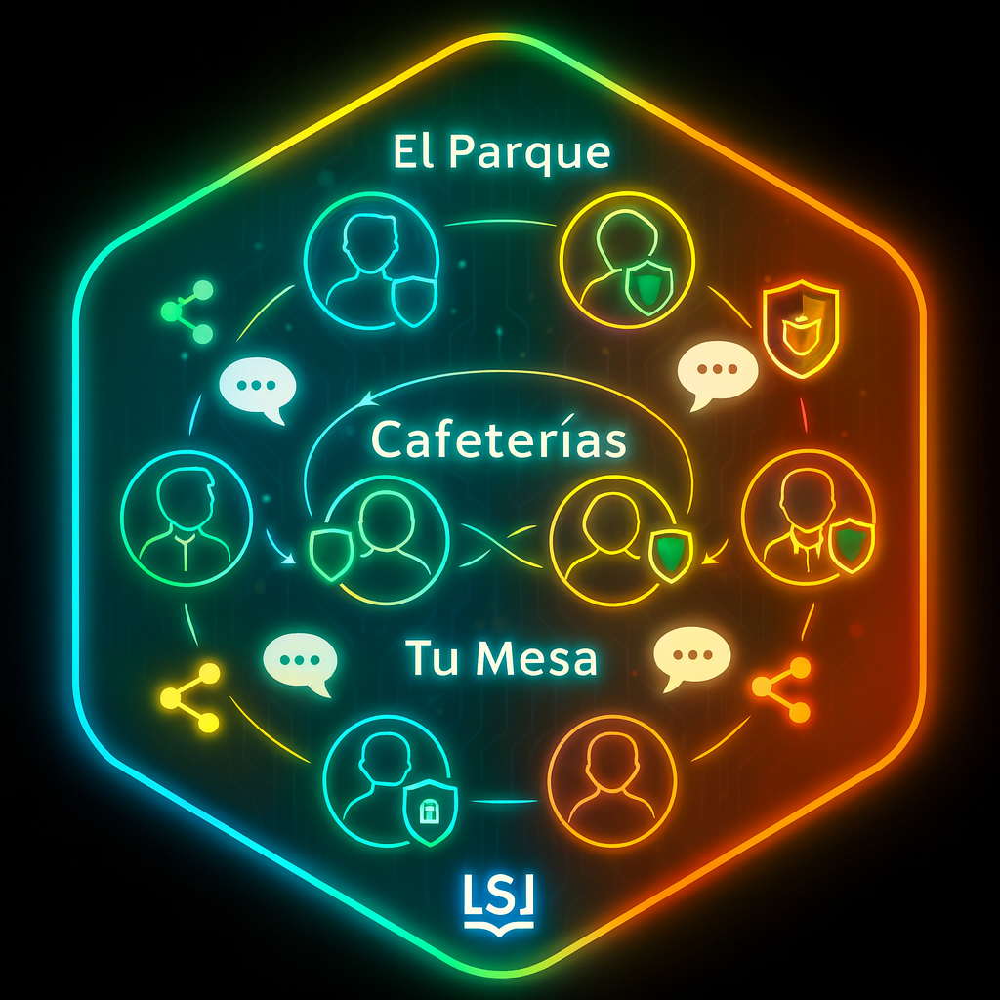

Explora los pilares del Selbook
Haz clic en cualquier hexágono para ver una explicación sin salir de aquí.
Con estos nueve hexágonos podrás comprender la increíble experiencia Selbook. No se trata de una simple historia de "Elije tu propia aventura",
Es algo que va mucho más allá. Ahora manda el Lector. Ahora mandas tú.
Y tendrás infinitos caminos...
Pero sólo uno será Tu Historia.
Se adapta a tus emociones
La capacidad de adaptación del Selbook se basa en 3 componentes:
- Dispositivo de Reconocimiento Neuronal (BIC): lee tus emociones y reacciones en tiempo real.
- Nudos narrativos: momentos de la historia donde la trama se bifurca en distintas opciones.
- Sely, la IA anfitriona: con tu perfil y emociones, decide qué ruta seguir.
En la configuración inicial indicas voluntariamente tus gustos. Después, el BIC capta tus reacciones y, al llegar a un nudo, Sely combina esa información con la historia para elegir la subtrama más adecuada.
Experiencia Multimedia
No estas leyendo un libro. Estás viviendo una experiencia 360. El BIC o las Gafas de realida mixta, dispondrán de auriculares de alta calidad.
Escucharás una Banda Sonora que se acompasa a la trama y tensión de la historia de forma dinámica y palabra por palabra. Si hay tensión, si la escena es épica, o romántica... la BSO se irá adaptando a tus emociones en coherencia con tu lectura.
Tendrás efectos sonoros que potencien cada situación (sin excesos, claro). Y podrás vivir muchos de los pasajes y escenas de diferentes formas: Un vídeo donde "sientes" la batalla, una imagen para ponerle cara al malo, puede que prefieras seguir un rato en modo Comics, o puede que te encanten los Audiolibros...
Todo es posible en el Selbbok.
Elige tu protagonista

¿Alguna vez te has preguntado cómo sería una historia "vista" desde la perspectiva de otro personaje? ¿Cómo sería El Señor de los Anillos visto desde los ojos de Gollum?
¿Qué pasó cuando Gandalf se separó de "La Compañia"?. Una obra literaria tradicional tiene limitaciones por la extensión y estructura. Pero cada una de esas perspectivas
de cada personaje, en realidad, existen en la cabeza del autor. ¿Y si le dejamos que las cuente? Eso es Selbook: La creatividad sin límites.
Podrás elegir a tu protagonista, vivir la misma historia, pero con sub-tramas diferentes, conociendo otros personajes secundarios o profundizando en los de la trama principal. Sintiendo y experimentando nuevos caminos.Y cuando termines... podrás, no, querrás empezar con otro protagonista.
Rutas infinitas

Recuerda que los "Nudos" son encrucijadas narrativas donde la historia se ramifica. Según tus emociones, reacciones y, a veces, decisiones, seguirás una ruta u otra. Seli, la IA, decidirá por ti en función de tu perfil emocional.
Basta con imaginar 3 o 4 nudos, con varias rutas cada uno, para que las posibilidades de vivir la historia se multipliquen de forma exponencial. Al terminar, querrás empezar de nuevo. Pero ya conocerás personajes y situaciones, y tus emociones habrán cambiado. Seli nunca repetirá un camino que ya viviste: te sorprenderá, es su 8ª Ley. Así, un Selbook te ofrecerá infinitos recorridos... y querrás explorarlos todos.
Sely, tu anfitriona IA
Sely no es solo una IA. Es tu anfitriona. Su misión es que tu experiencia Selbook sea perfecta. Irá aprendiendo de ti. De tus gustos, de lo que sientes en cada escena, los personajes que más te atraen o los que menos te gustan. El estilo de escritura o género literario que prefieres... Con el tiempo, te conocerá mejor que tú mismo. Y cuidará de ti. Será quien genere las imagenes y los vídeos, quien te proteja de spoilers. Podrás charlar con ella sobre historias o personajes y te guiará en la búsqueda de nuevas historias. Sus 8 leyes están pensadas para protegerte y ayudarte. Lo dicho: Sély es mucho más que una IA.
La Comunidad

No sólo nos gusta leer o vivir historias. Nos Gusta hablar de ellas. Compartir. Debatir. Opinar... La Comunidad es la Red Social soñada por los amantes de las historias. Tendrás La Librería para conocer y comprar nuevos stringbooks. Tendrás El Parque donde conocer gente nueva. Tendrás La Cafetería, tu pequeño rincón de amigos. Y tendrás Tu Mesa, tu nivel más íntimo donde sólo tú decidirás con quién te tomas un café. Y para ayudarte, protegerte y guiarte, Sely, tu anfitriona IA, se encargará de todo. Tú sólo pasea, ve a la librería, tomate un café y, sobre todo, vive una historia.
Ready-to-play
¿Estás listo para tomar el control de la historia? El Selbook es una experiencia 360: puedes vivir un vídeo, la banda sonora, comics... y podrás vivir en primera persona diferentes escenas, tomando tú mismo el control: Te pones a los mandos de un aeroplano, conduces un coche en una persecución, capitaneas una incursión militar en un bosque... Y tu participación puede ser aún más activa y real: Interroga tú mismo al sospechoso, investiga y recoge pruebas en una escena de un crimen, etc.
Recuerda: Un Selbook no es una simple novela. Es una Experiencia. Es una Revolución.
Contenidos Extra
Dispondrás de una completa lista de "extras" increíbles. Relatos paralelos, que completan la visión global de la historia o Personajes Tangenciales, personajes sin una presencia protagonista en la historia principal, pero que genera interés y podrás leer algun relato sobre ellos. Podras Chatear con los personajes de la historia, imprimir la ruta leída, guardar tus generaciones multimedia, etc.
Todo pensado para que tu experiencia Selbook sea increíble.
Servicios para Autores
Los Autores son una pieza clave para el Selbook. Por esa razón, dispondrán de toda un serie de herramientas creativas y de promoción a su disposición. Podrán publizar en el Sello Nativo o externo, podrán aprovechar la información de emociones y análisis estadísticos de sus obras, lecturas, personajes y rutas (los datos serán anónimos). La vida útil de sus obras será mucho mayor gracias a la posibilidad de publicar ampliaciones de rutas o nuevos Protagonistas elegibles. Su potencial creativo no tendrá límites en Selbook.
Perfil de Usuario (Estático)
En la configuración inicial, y con la ayuda de Sely, el Selbook crea un Perfil Base del usuario con sus gustos y preferencias (novelas, series, cine...) y sus rasgos emocionales y de personalidad (alegre, tímido, optimista, etc.). Además, se solicita permiso para conexiones externas como redes sociales. Con esta información, y con la experiencia acumulada en otras lecturas e interacciones en la Comunidad, se construye el Perfil Emocional del lector.
Inicio
Antes de iniciar la lectura, el usuario puede configurar algunos aspectos como el número de nudos subliminales o el volumen del audio. Después llega el paso clave: elegir al protagonista. El Selbook mostrará las opciones indicando, por ejemplo, el género narrativo predominante (uno con más aventura, otro con más intriga), junto a sinopsis o relatos paralelos.
Y entonces llega el momento: el usuario elige a su protagonista y comienza la historia.
BIC: emociones en tiempo real
El BIC (Dispositivo de reconocimiento neuronal), está leyendo tus reacciones y emociones desde que has entrado en la "Sala de lectura", incluso cuando estás decidiendo qué protagonista elegir, recoge información, pero su principal actividad empezará cuando comiences la lectura.
Cuando conoces a un personaje, cuando lees la descripción de una escena, cuando hay situaciones de tensión o de emoción... la interacción entre personajes y esecenas provocan emociones y reacciones que recoge el BIC y alimentan tu Perfil Emocional.
Nudos del Stringbook
A lo largo de la historia surgirán “encrucijadas” o Nudos, de los que parten rutas diferentes. A veces invisibles y otras evidentes, son la clave de la Adaptabilidad. Cada ruta abre nuevas subtramas dentro de la misma historia, pueden surgir otros personajes o profundizar en otras relaciones, vivir escenas diferentes... en definitiva: Infinitos caminos. Una Historia.
Existen 3 tipos de nudos:
- Invisible-Subliminal: No sabrás que estás en un Nudo. Sely decide la ruta sin que lo notes.
- Visible Inconsciente: Sabrás que estás en un nudo porque se te consulta algún aspecto, pero decide Sely, tu respuesta no es vinculante.
- Visible Consciente: Una elección directa, pero que te lleva al límite: O una situación crítiva o un dilema moral.
IA (Sely)
Sely será la encargada de que tu Experiencia Selbook sea increíble, la mejor posible. Cuando llegas un Nudo, Seli analiza tus emociones y perfil emocional, compara todas las rutas posibles y elegirá la mejor opción. No buscará lo fácil, sino sacarte de tu zona de confort literario para crear una historia memorable.
Es posible que sus decisiones no las comprendas al principio ("Por qué me lleva por aquí si no me gusta Tom??"), pero Sely sabe que esa es la ruta que más te gustará. Confía en ella!
Experiencia Interactiva
Otras decisiones que podrás tomar será el cómo quieres vivir una escena o situación. En ciertos pasajes dispondrás de la posibilidad de generar una imagen (quizás quieras ver cómo es Sam, o ese increíble paisaje), podrás ver un vídeo (de, por ejemplo, una batalla épica), seguir la historia en modo Comic, o Audiolibro...
Y dispondrás de una función Increíble: Tomar el control. Con el Ready-to-Play podrás interrogas al sospechoso, conducir en la persecución, comandar una emboscada...
Fin / Aprendizaje
No, amigo mío, el Final no podrás elegirlo. No existirán finales alternativos. La Historia es Una y sólo tiene un final. Pero podrás llegar a él por diferentes caminos y vivir ese final desde perspectivas y protagonistas diferentes.
Y cuando termines la historia, Sely habrá ampliado su conocimiento sobre tus tendencias, gustos y afinidades, por lo que, cada lectura, cada ruta, cada historia le servirá para apender de ti y guiarte en la siguiente aventura consiguiendo que cada vez tu experiencia sea mejor.
Volver a empezar o elegir otra historia
Y llegará el momento de tomar otra gran decisión: ¿Comienzas de nuevo pero con otro protagonista? ¿Con el mismo, pero tomando otras decisiones? (y, como ya conoces la historia, sely se encargará de sorprenderte por otro camino) ¿Vas a una cafetería sobre esa historia y charlas? O... Entras en La Librería en busca del siguiente Stringbook?